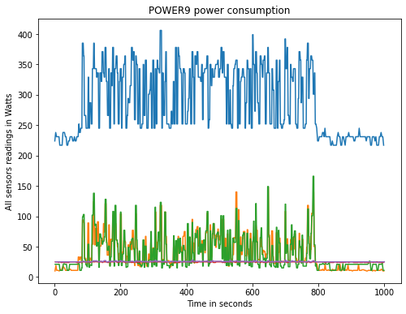
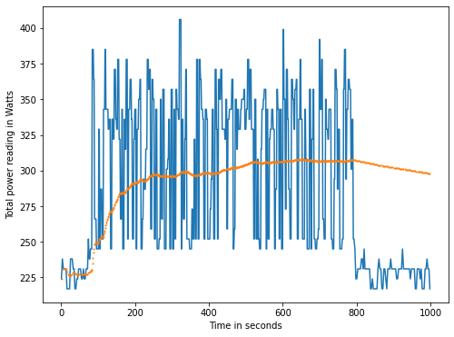
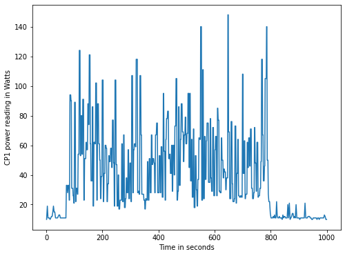
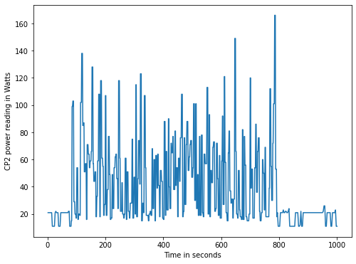
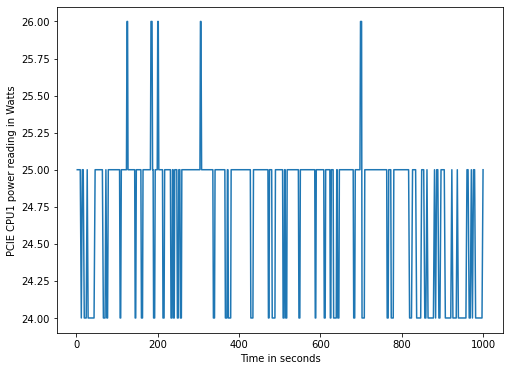
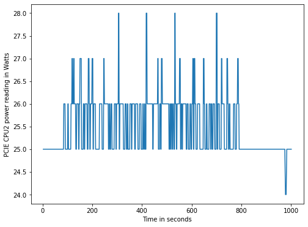

In this post, we will show how to get data on power consumption in a POWER9 bare-metal machine and how to plot this data using python.
To measure the power consumption, a program called ipmitool will be used, once it give us the access to ipmi sensor data.
In order to get a good span of values, a Image Classification script was used, which its code and execution procedure can be found here: https://openpower.ic.unicamp.br/post/ai-profiling-for-power/
Using ipmitool to get sensors data
In order to get a list of IPMI sensors, use the following command.
Command: sudo ipmitool sensor list
Output fields meaning with example:
| Sensor ID | Sensor Reading | Sensor Reading Unit | Status | Lower Non-Recoverable | Lower Critical | Lower Non-Critical | Upper Non-Critical | Upper Critical | Upper Non-Recoverable |
|---|---|---|---|---|---|---|---|---|---|
| CPU1 Temp | 34.000 | degrees C | ok | 5.000 | 5.000 | 10.000 | 88.000 | 90.000 | 92.000 |
To get a single sensor data, use the command:
ipmitool sensor get <Sensor ID>
Example:
sudo ipmitool sensor get CPU1\ Temp
Locating sensor record...
Sensor ID : CPU1 Temp (0xb)
Entity ID : 65.1
Sensor Type (Threshold) : Temperature
Sensor Reading : 36 (+/- 1) degrees C
Status : ok
Lower Non-Recoverable : 5.000
Lower Critical : 5.000
Lower Non-Critical : 10.000
Upper Non-Critical : 88.000
Upper Critical : 90.000
Upper Non-Recoverable : 92.000
Positive Hysteresis : 2.000
Negative Hysteresis : 2.000
Assertion Events :
Assertions Enabled : ucr+
Deassertions Enabled : ucr+
The power measurement was collected by using the following python script, which not only calls ipmitool, but also parse the data into a csv file.
import sys
import subprocess
import time
import csv
duration = sys.argv[1]
file_name = sys.argv[2]
sensors = sys.argv[3:]
time_begin = time.time()
with open(file_name + '.csv', 'w') as file_out:
write = csv.writer(file_out)
first_row = ['Sensor_ID', 'Entity_ID', 'Sensor_Type_Threshold_',
'Sensor_Reading', 'Status',
'Lower_Non_Recoverable', 'Lower_Critical',
'Lower_Non_Critical', 'Upper_Non_Critical', 'Upper_Critical',
'Upper_Non_Recoverable', 'Positive_Hysteresis',
'Negative_Hysteresis', 'Assertion_Events',
'Assertions_Enabled', 'Deassertions_Enabled', 'Time_elapsed']
write.writerow(first_row)
end = time.time() + float(duration)
while end > time.time():
for sens in sensors:
command = ['sudo', 'ipmitool', 'sensor', 'get', sens]
process = subprocess.run(
command,
stdout=subprocess.PIPE,
universal_newlines=True)
output = process.stdout
output = output.split('\n')[2:-2]
current_row = []
current_row.append(sens)
for i in range(len(output)):
output[i] = output[i].split(':')
output[i][0] = output[i][0].replace(' ', '')
for j in range(1,len(output[i])):
output[i][j] = output[i][j].split()
if len(output[i][j]) > 0:
current_row.append(output[i][j][0])
else:
current_row.append('')
current_row.append("{:.5f}".format(time.time() - time_begin))
write.writerow(current_row)
This was the python command used:
python3 sensorsIPMI.py 1000 pwr.csv Total\ Power CPU1\ Power CPU2\ Power PCIE\ CPU1\ Pwr PCIE\ CPU2\ Pwr
Plot the data
In order to plot the data, a jupyter notebook was used.
Which is available here:

The following graphs were ploted in the notebook:
All sensors:

Total Power:

CPU1 Power:

CPU2 Power:

PCIE CPU1 Power:

PCIE CPU2 Power:

IPMI on OpenPOWER source:
- https://www.ibm.com/developerworks/library/l-openpower-firmware-ipmi/index.html
- https://www.ibm.com/support/knowledgecenter/9006-22C/p9eih/p9eih_ipmi_syshealth.htm
Although made for a different hardware vendor, a good source for ipmitool commands can be found on the following url: https://docs.oracle.com/cd/E19464-01/820-6850-11/IPMItool.html